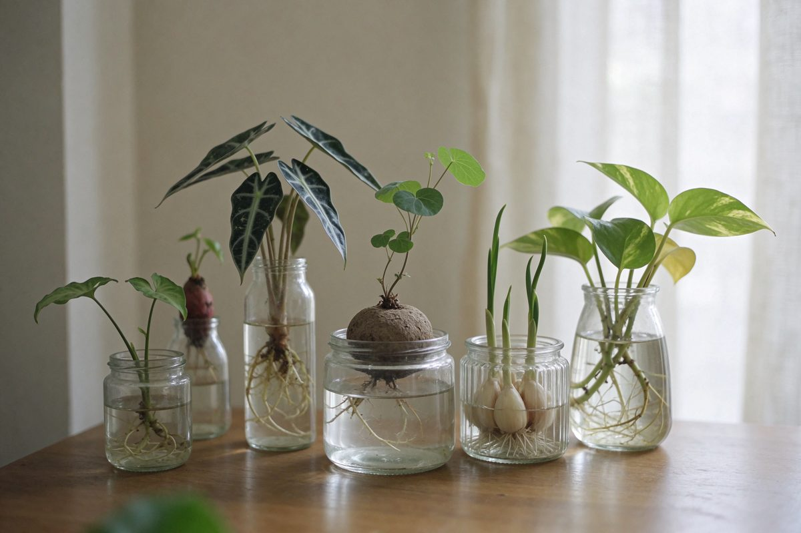

把土培的盆都撤掉以后，窗台空了一阵。后来一个一个玻璃瓶摆上来， 现在正好五个，从左到右：合果芋、小仙女、山乌龟、大蒜、绿萝。 高度参差不齐，根须在水里看得清清楚楚，比任何花盆都诚实。

一、五个瓶子，五种脾气
合果芋是最早下水的，也是最不给面子的——剪一段带节点的茎插进水里， 一周就抽出白根，之后长得飞快。它喜欢散射光，放在窗边偏里的位置正好； 唯一的问题是水培久了新叶会越来越小，我现在每个月滴两滴营养液，情况好一些。
小仙女是五个里最娇气的一个。天南星科的叶子，深绿底子上有银白色的叶脉， 好看是真好看。它怕晒，太阳直射一下午叶边就会发焦；水培的时候我把水位压在根的一半， 茎基和球茎那一截露在瓶口外面，不长期泡着，否则很容易从底部开始软。
山乌龟最好看的是那块圆圆的块根，像一块被谁随手放在瓶口的石头。 水培它其实不是把整块根泡进去：瓶口卡住块根，根须垂到水里，水面离块根留一两厘米。 它先长根，再长叶，中间能安静一两个月，急不得。
水培大蒜是唯一一个“立刻有反馈”的。剥掉外皮，底部三分之一泡在水里， 两三天换一次水，一周就能看见一排绿芽，长得比谁都直。它是我冬天窗台上的青菜替补， 剪一茬还能再长一茬，成本只要几毛钱。
绿萝不用多说，剪一段带气生根的枝条，节点泡在水里，一周就生根。 它最皮实，也最容易被我忽略——水一少就蔫，补上水又立刻精神。 养久了会发现，水培绿萝的叶子比土培的小一号，但颜色更干净。
二、水培真正要盯的三件事
养了这五个瓶子之后我才明白，水培不是“泡着就行”。真正天天要看的是三件事：
- 水位。根可以泡水，球茎、块根、茎基不要长期泡。水位低一点比高一点安全。
- 换水。我固定每周日换一次，夏天热的时候三四天一次。换水时顺便冲一冲瓶壁，苔和滑膜一长，根就容易烂。
- 光照。全是散射光，没有一盆放在直射的窗台上。水培的根见光会变绿、长藻，瓶子反而不清爽。
三条口诀：水位不过球、七天换一次、散光不暴晒。 做到这三条，大部分水培植物都能活得不错。
三、翻过的那几次车
最开始我把小仙女的整截茎都泡进水里，觉得“多喝点水总没坏处”，结果两周后茎底发黑， 剪掉一半才救回来。山乌龟更冤，第一次水加得太满，块根底部泡了三天，表面起了一层软斑， 赶紧倒掉一半水、放在通风处晾了两天才稳住。
大蒜倒是从来没翻车，只会有一个问题：忘了换水，整瓶臭掉。 后来我把它放在离门口最近的位置，出门前顺手看一眼，反而成了五瓶里被照顾得最勤的。
现在这五个瓶子各占一小块窗台，谁也不挤谁。早上拉开窗帘，光斜着照进来， 能看见根须在水里轻轻晃。土培的时候看不到这些，水培把植物的另一半也摆到了明面上。